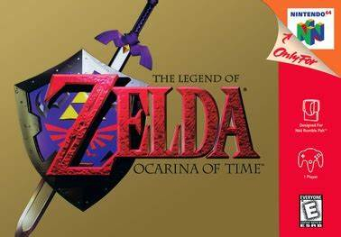
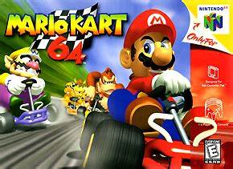

O Nintendo 64, frequentemente abreviado como N64, é um console de videogame da quinta geração lançado pela Nintendo. Foi introduzido no Japão em 23 de junho de 1996 e marcou uma revolução no mercado de jogos da época com sua arquitetura de 64 bits. Isso permitiu uma grande inovação: a introdução de gráficos 3D nos jogos, tornando-os mais imersivos.
O N64 contou com três títulos de lançamento no Japão: Super Mario 64, PilotWings 64 e Saikyou Habu Shogi. Nos EUA e no Brasil, foi lançado em 29 de setembro de 1996, com dois títulos de lançamento: Super Mario 64 e PilotWings 64. No Brasil, o console vinha com o cartucho de Super Mario 64 incluso.
O console foi anunciado originalmente em 1993 com o codinome "Project Reality" e foi primeiramente apresentado com o nome Nintendo Ultra 64. O nome foi reduzido para Nintendo 64 em fevereiro de 1996, poucos meses antes do lançamento.
Apesar de algumas escolhas da Nintendo, como a insistência em usar cartuchos, terem fadado o N64 a um papel menor na indústria em comparação com seus concorrentes, o console ainda montou um acervo respeitável de jogos, incluindo clássicos como Ocarina of Time, Banjo-Kazooie e, claro, Super Mario 64, que estabeleceram padrões para a indústria de jogos.
|  | |
|
|
 |